Publication copies only. Black rectangles remove private details; amber outlines and context banners are added annotations.
1 · The opened USG shows the motherboard, internal USB boot media, heatsink and surrounding components. Device labels are redacted.
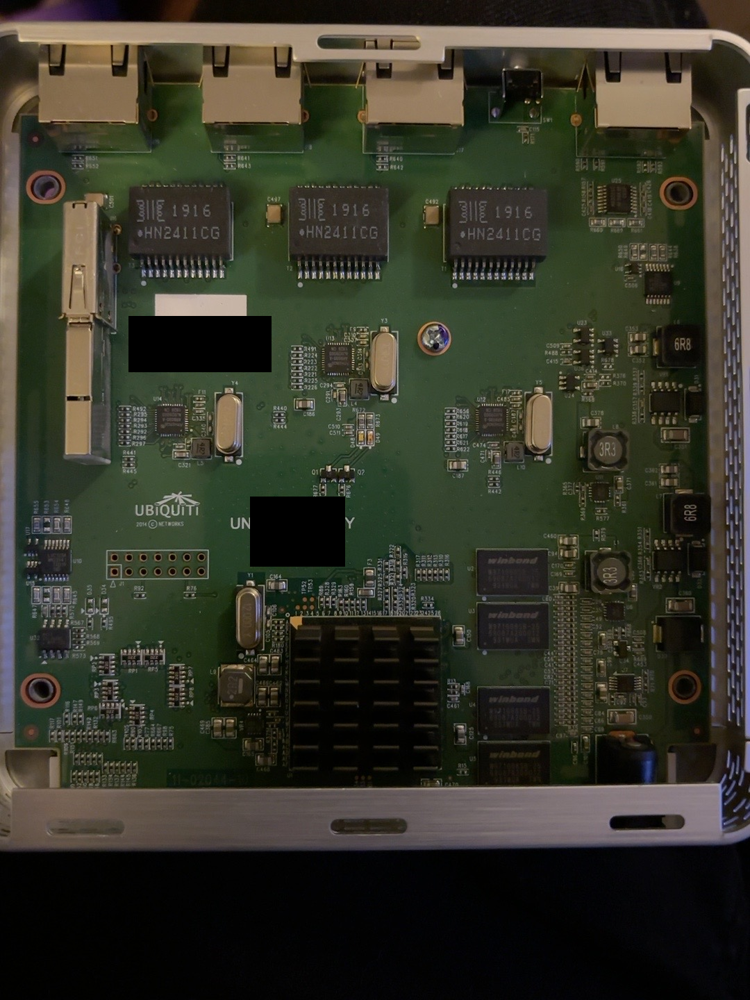
The opened USG shows the motherboard, internal USB boot media, heatsink and surrounding components. Device labels are redacted.
2 · A closer view shows the boot drive partly withdrawn from the internal USB-A port; board identifiers are redacted.
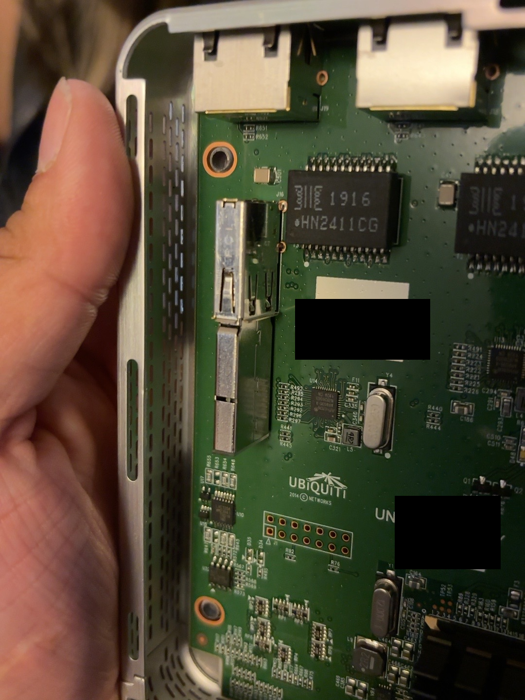
A closer view shows the boot drive partly withdrawn from the internal USB-A port; board identifiers are redacted.
3 · The internal USB-A port is empty after boot media removal; board identifiers are redacted.
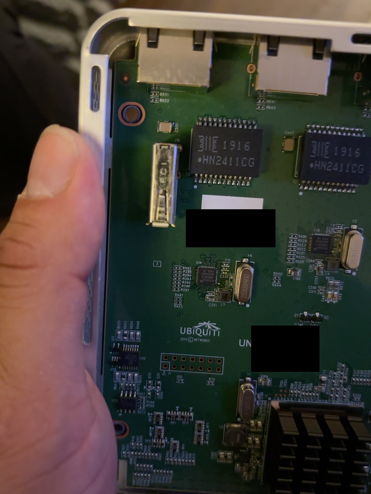
The internal USB-A port is empty after boot media removal; board identifiers are redacted.
4 · The removed USB boot drive is shown from the metal casing seam side, with no external model label visible.
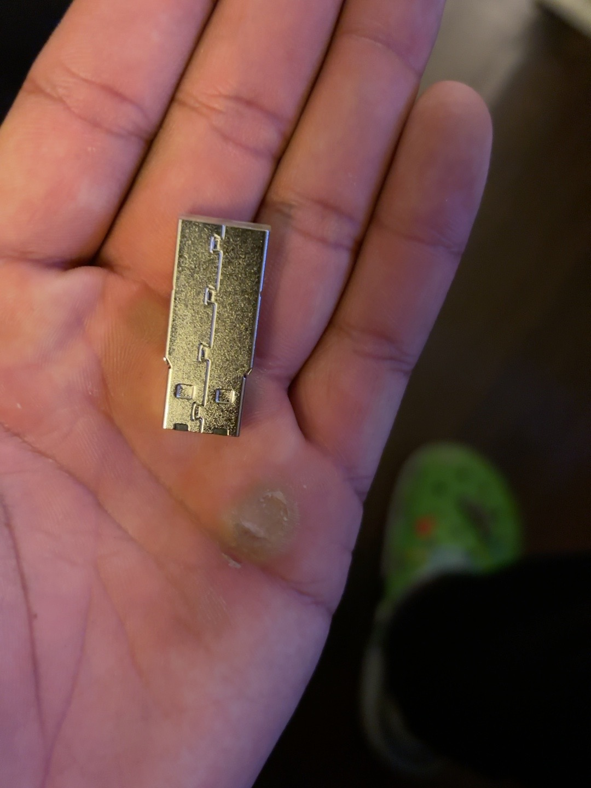
The removed USB boot drive is shown from the metal casing seam side, with no external model label visible.
5 · The flat face of the removed USB boot drive shows its unmarked metal casing.
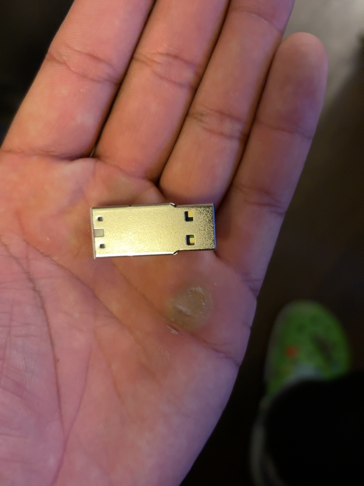
The flat face of the removed USB boot drive shows its unmarked metal casing.
6 · An edge view documents the compact physical profile of the removed USB boot drive.
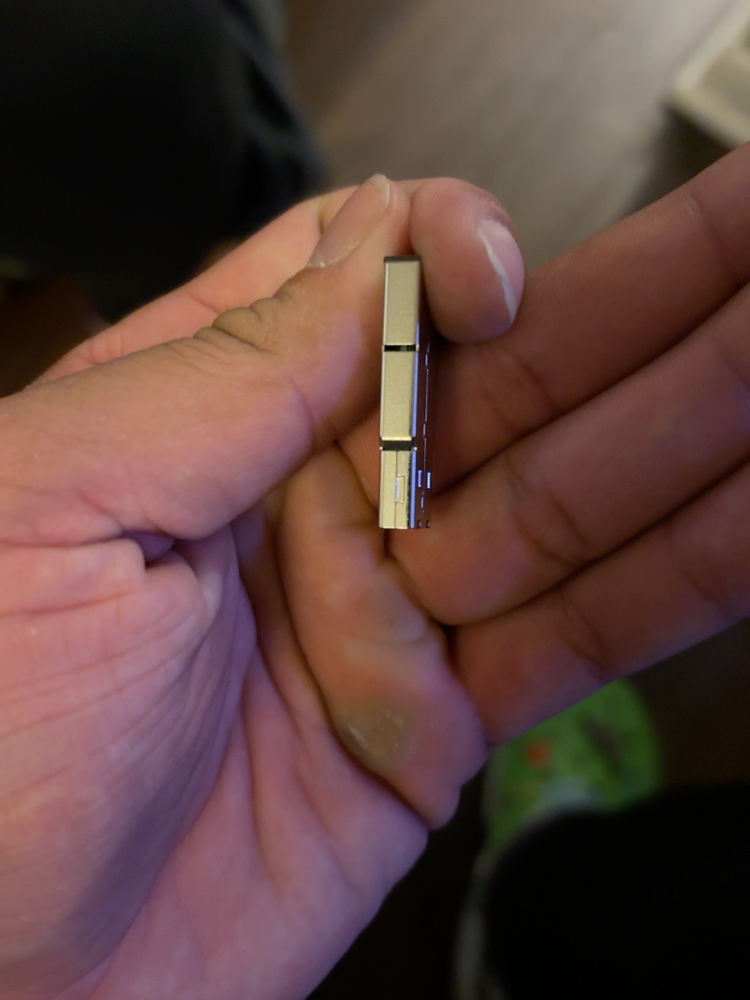
An edge view documents the compact physical profile of the removed USB boot drive.
8 · Windows reports FAT32, volume capacity and space usage for the boot volume; this is not the capacity of the entire USB.
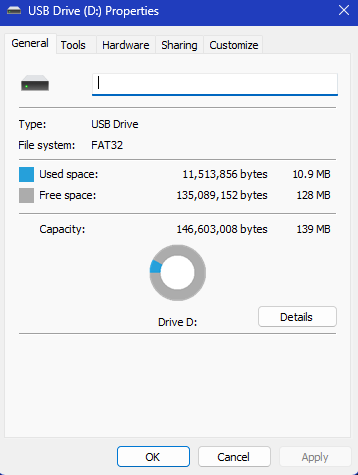
Windows reports FAT32, volume capacity and space usage for the boot volume; this is not the capacity of the entire USB.
9 · Windows File Explorer shows the paired vmlinux boot files and their MD5 files; the personal account label is redacted.
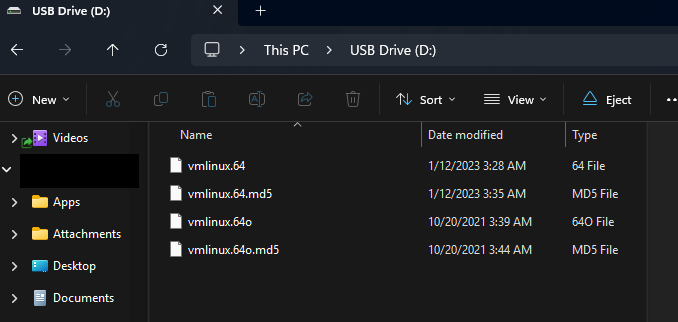
Windows File Explorer shows the paired vmlinux boot files and their MD5 files; the personal account label is redacted.
10 · Windows identifies the attached boot media as a UDinfo UF2 4GB USB device.
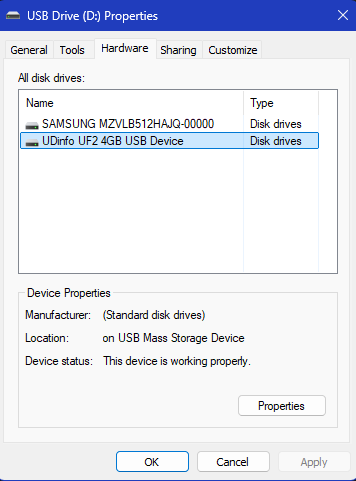
Windows identifies the attached boot media as a UDinfo UF2 4GB USB device.
11 · A second Explorer view records boot filenames, sizes and modification dates; the unrelated sidebar is redacted.
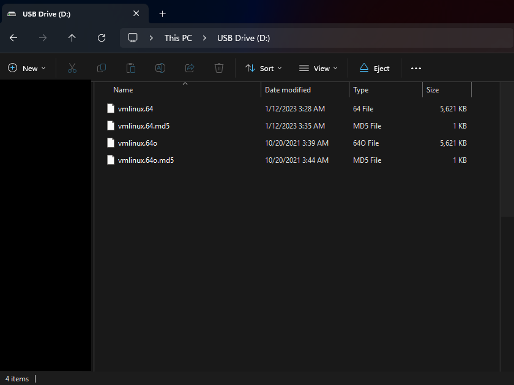
A second Explorer view records boot filenames, sizes and modification dates; the unrelated sidebar is redacted.
12 · Get-Disk reports the USB as healthy, online and MBR-partitioned; both drive serial numbers are redacted.
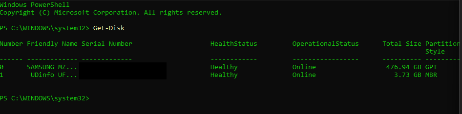
Get-Disk reports the USB as healthy, online and MBR-partitioned; both drive serial numbers are redacted.
13 · Get-Partition lists three USB partitions, including the FAT32 boot partition; the unique device path is redacted.
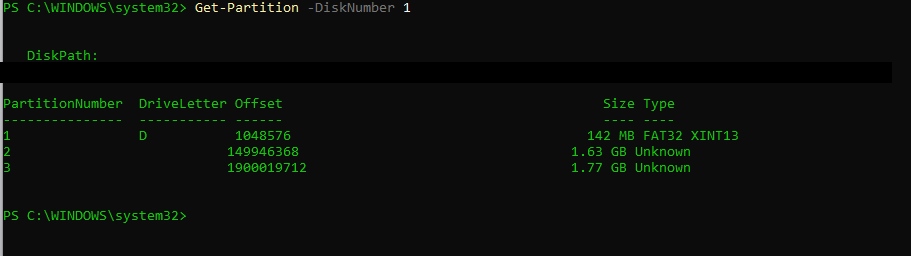
Get-Partition lists three USB partitions, including the FAT32 boot partition; the unique device path is redacted.
14 · Detailed disk properties record capacity, sector size and partition count; unique identifiers and hostname are redacted.
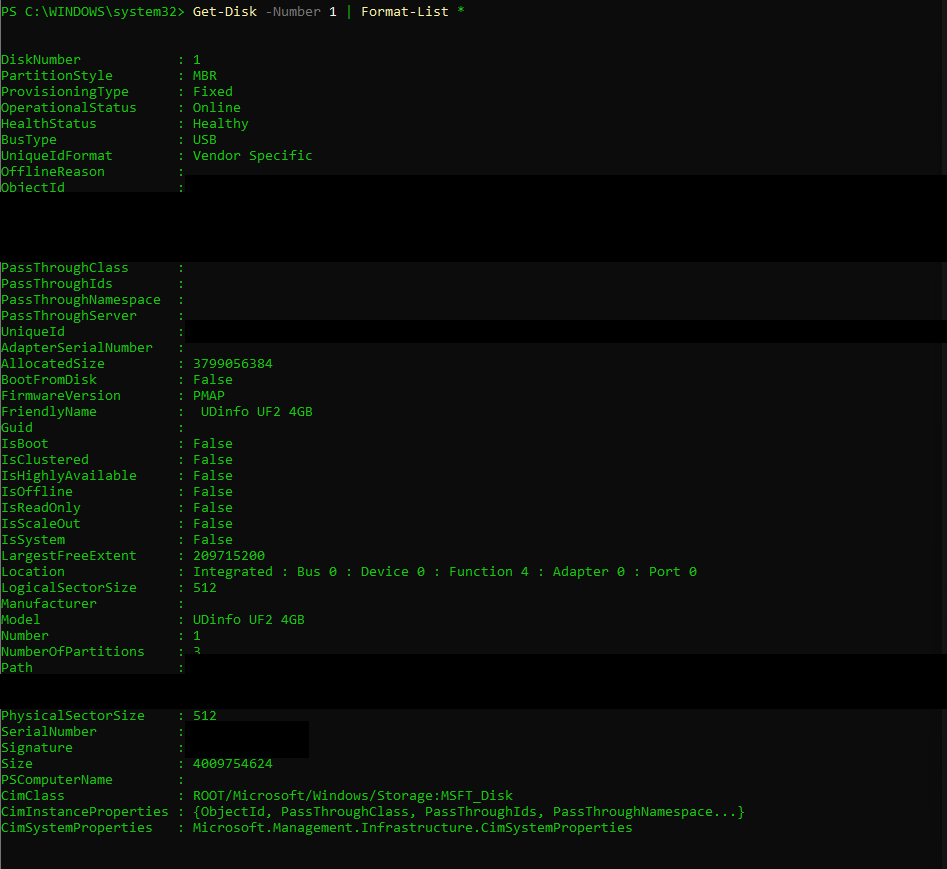
Detailed disk properties record capacity, sector size and partition count; unique identifiers and hostname are redacted.
15 · PowerShell records the SHA-256 of the complete acquired USB image; personal filesystem paths are redacted.
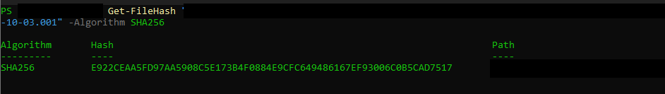
PowerShell records the SHA-256 of the complete acquired USB image; personal filesystem paths are redacted.
16 · FTK reports matching MD5 and SHA-1 verification results and no bad blocks for the acquired image.
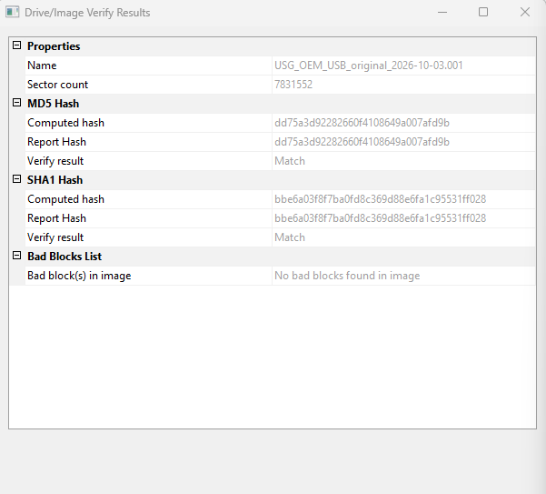
FTK reports matching MD5 and SHA-1 verification results and no bad blocks for the acquired image.
17 · The FTK acquisition summary records image size, timestamps and matching verification results; the personal path is redacted.
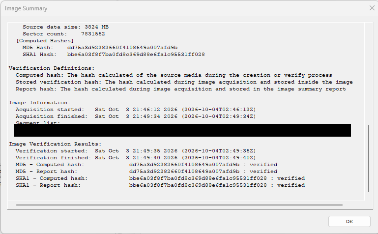
The FTK acquisition summary records image size, timestamps and matching verification results; the personal path is redacted.
18 · The FTK source properties record USB geometry and capacity; the serial number and personal path are redacted.
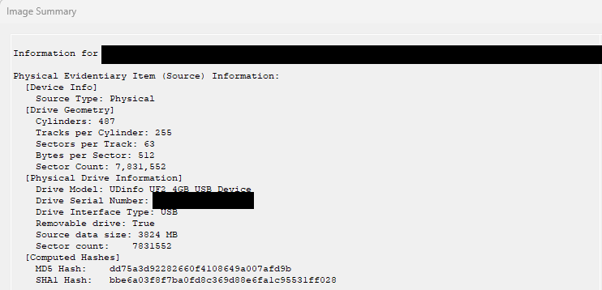
The FTK source properties record USB geometry and capacity; the serial number and personal path are redacted.
19 · The acquisition report records FTK version and case identifiers; examiner name and computer hostname are redacted.
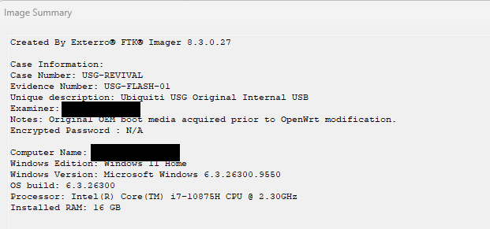
The acquisition report records FTK version and case identifiers; examiner name and computer hostname are redacted.
20 · The destination dialog records the image filename and acquisition options; the personal destination path is redacted.
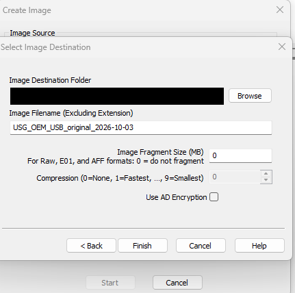
The destination dialog records the image filename and acquisition options; the personal destination path is redacted.
21 · The source selection dialog shows the UDinfo USB selected as the physical drive to acquire.
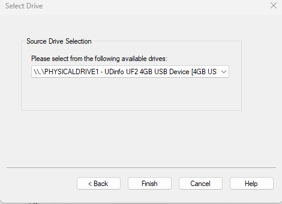
The source selection dialog shows the UDinfo USB selected as the physical drive to acquire.
22 · FTK is configured to acquire a physical drive rather than only the mounted FAT32 volume.
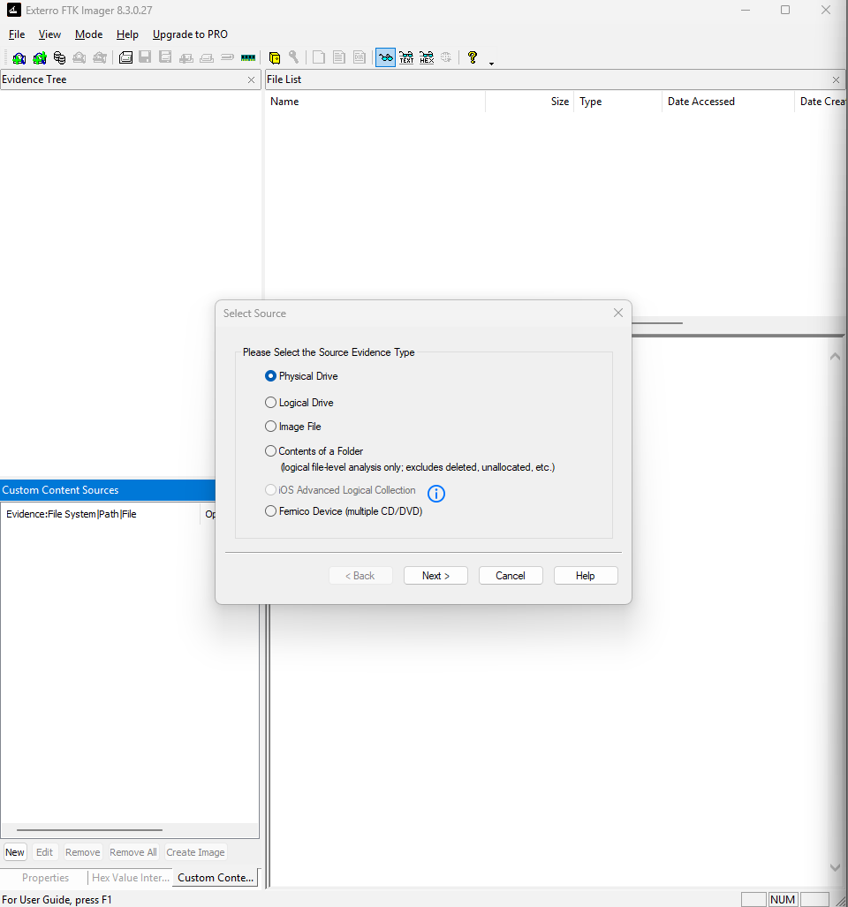
FTK is configured to acquire a physical drive rather than only the mounted FAT32 volume.
23 · The installer confirms FTK Imager installation completed; unrelated background terminal information is redacted.
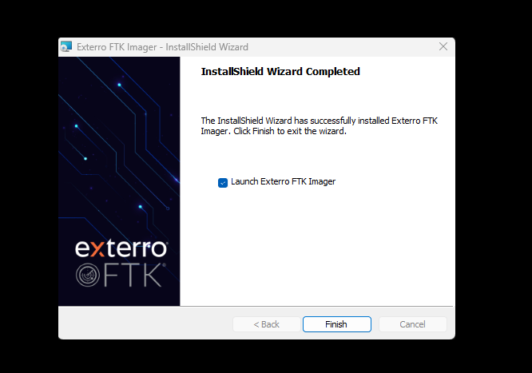
The installer confirms FTK Imager installation completed; unrelated background terminal information is redacted.
24 · Partition overview: FAT32 + two Ext3 filesystems
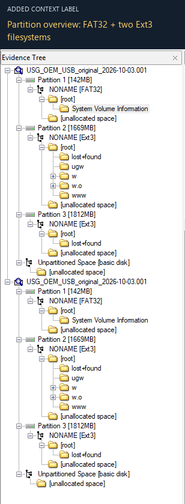
The evidence tree shows one FAT32 and two Ext3 partitions. The same image appears twice in the tree.
25 · Partition 2 (Ext3) / root
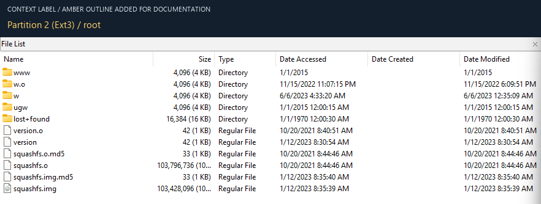
Partition 2 root contains paired version and squashfs files, checksum files, and working directories.
26 · Partition 3 (Ext3) / root
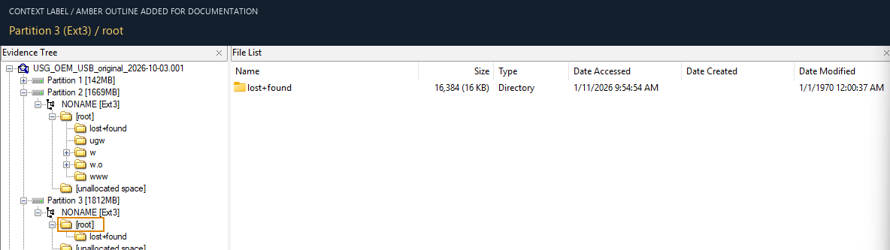
Partition 3 root lists only lost+found; this does not establish the absence of deleted or unallocated data.
27 · Partition 2 (Ext3) / root / version.o
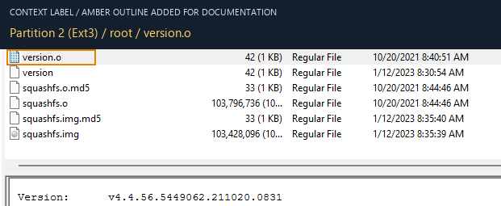
The version.o preview contains v4.4.56.5449062.211020.0831, identifying the older version label.
28 · Partition 2 (Ext3) / root / version
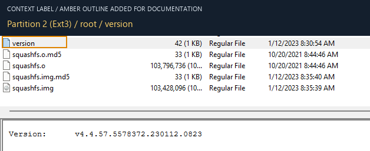
The version preview contains v4.4.57.5578372.230112.0823, identifying the newer version label.
29 · Partition 2 (Ext3) / root / squashfs.img.md5
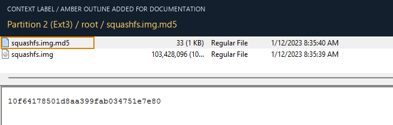
The squashfs.img.md5 preview supplies the declared checksum for squashfs.img; independent verification is recorded separately.
30 · Partition 2 (Ext3) / root / squashfs.o.md5
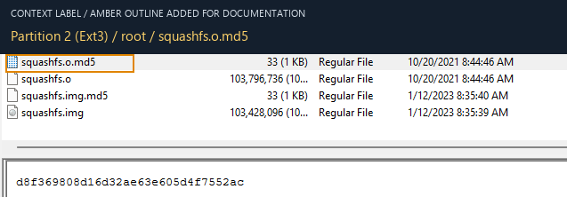
The squashfs.o.md5 preview supplies the declared checksum for squashfs.o; independent verification is recorded separately.
31 · Both exported firmware files match their declared MD5 values; independent SHA-256 hashes are recorded and personal prompts are redacted.
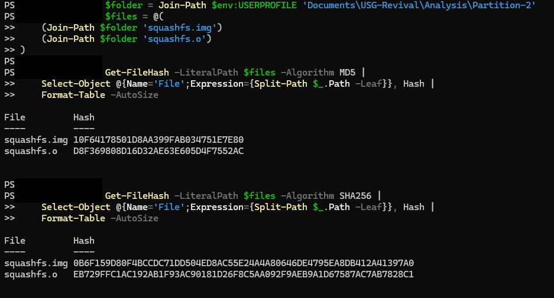
Both exported firmware files match their declared MD5 values; independent SHA-256 hashes are recorded and personal prompts are redacted.
32 · Partition 2 (Ext3) / root / ugw
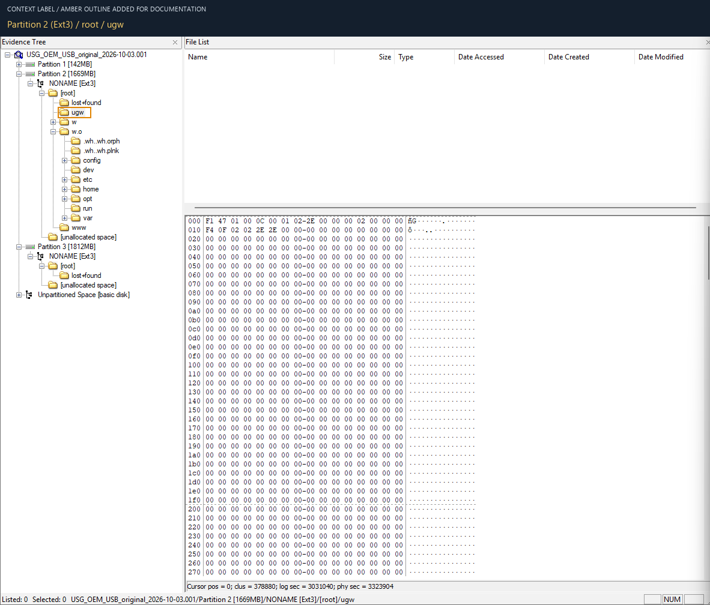
FTK lists zero entries in ugw with no visible error; the expanded w.o directory shows other subdirectories.
33 · Partition 2 (Ext3) / root / w / config
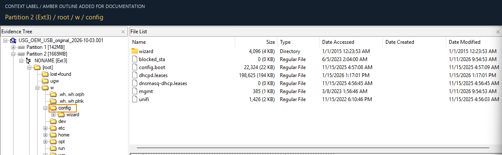
The w/config listing contains config.boot, DHCP lease files and UniFi-related files; their contents have not been published.
34 · Partition 1 (FAT32) / root
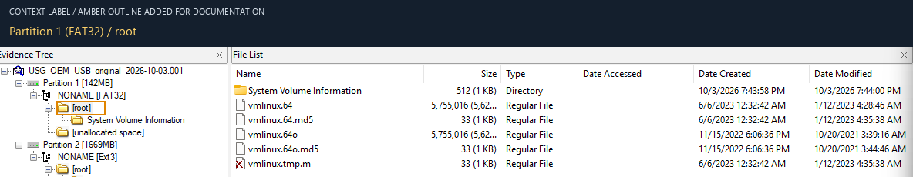
Partition 1 root lists paired vmlinux files and MD5 files, plus vmlinux.tmp.m marked with a red X; its significance remains unverified.
35 · Partition 1 (FAT32) / root / vmlinux.64.md5
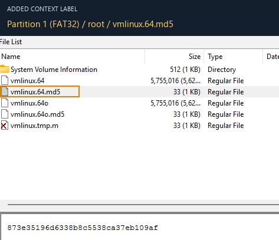
The vmlinux.64.md5 preview supplies the declared checksum for vmlinux.64; the exported file independently matches this value.
36 · Partition 1 (FAT32) / root / vmlinux.64o.md5
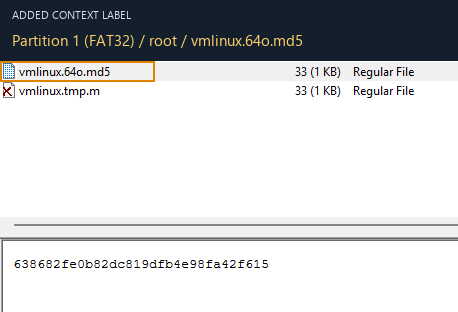
The vmlinux.64o.md5 preview supplies the declared checksum for vmlinux.64o; the exported file independently matches this value.
37 · Linux VM: /dev/sdb = USG USB; /dev/sda = VM system disk
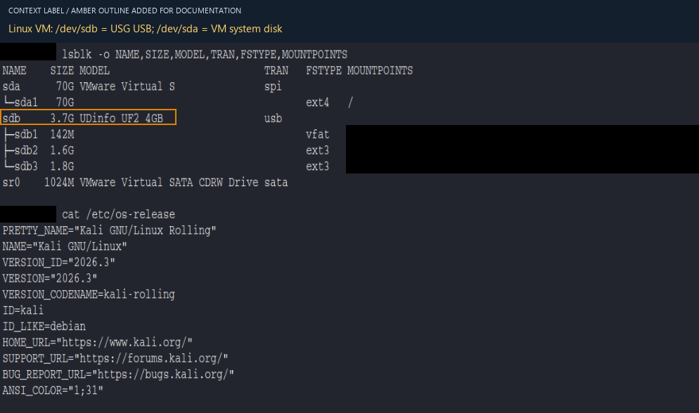
Kali 2026.3 in VMware identifies the 3.7 GiB UDinfo USB as /dev/sdb with three mounted partitions and the 70 GiB VM system disk as /dev/sda. Personal mount paths and prompt labels are redacted. Device names must be checked again after reconnecting.
38 · OpenWrt 25.12.5 USG archive: SHA-256 verification and contents
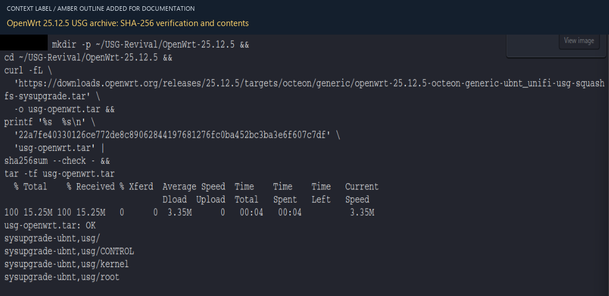
The USG-specific OpenWrt 25.12.5 download passes the pinned SHA-256 check. Its archive lists CONTROL, kernel and root under sysupgrade-ubnt,usg; installation and boot are not established by this screenshot.
39 · Stock USB: OpenWrt installation and comparison checks completed
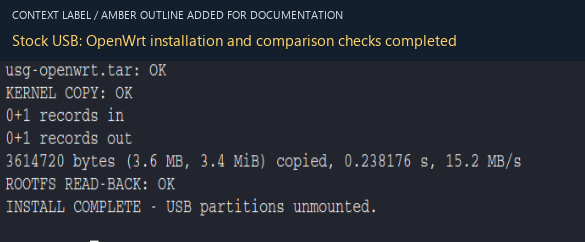
The installation output reports archive verification, successful kernel comparison and root filesystem read-back comparison, 3,614,720 root bytes written, and unmounted USB partitions. USG boot success has not yet been tested.
40 · First boot: OpenWrt LuCI reached from PC-001 over LAN1
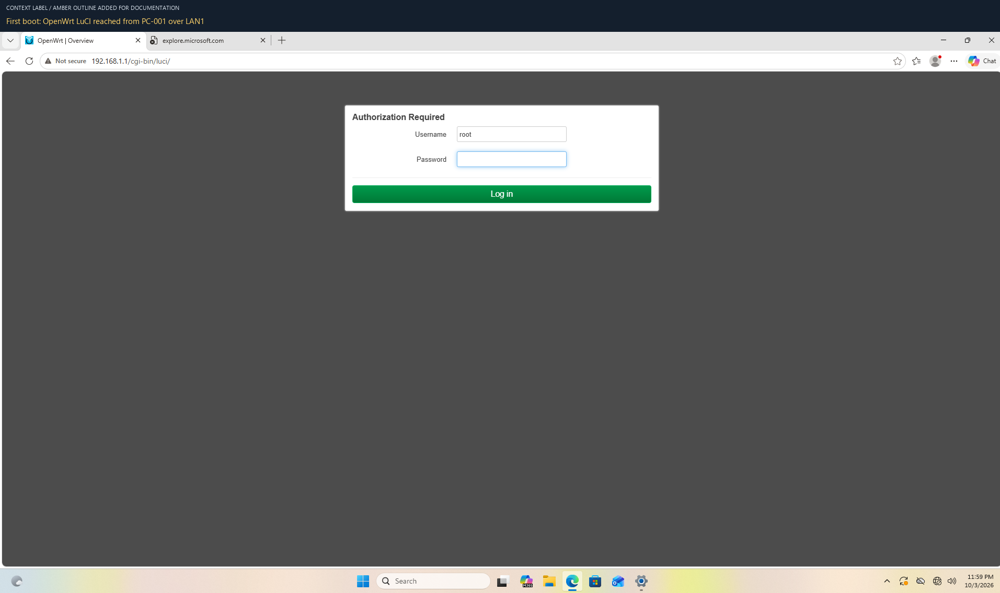
The OpenWrt LuCI login page responds at 192.168.1.1 after the first USG boot. The user reports PC-001 connected directly to LAN1 with Cat 6 and Wi-Fi disabled after a five-minute wait. Running firmware version and authenticated access remain unverified at this stage.
41 · Status / Overview / System: running OpenWrt release and hardware
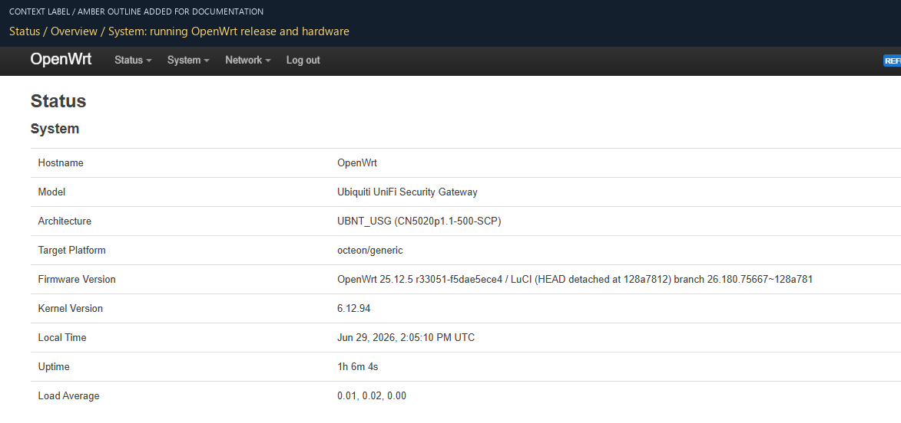
Authenticated LuCI Status Overview identifies the Ubiquiti UniFi Security Gateway running OpenWrt 25.12.5 r33051-f5dae5ece4 on octeon/generic with kernel 6.12.94. Uptime is 1h 6m 4s and load averages are 0.01, 0.02, 0.00. The displayed June 29, 2026 UTC time is inconsistent with the October 4 capture date; clock synchronization is unverified. Password setup, writable storage and reboot persistence remain unverified.
42 · Status / Overview: Memory, Storage and Ethernet Port Status
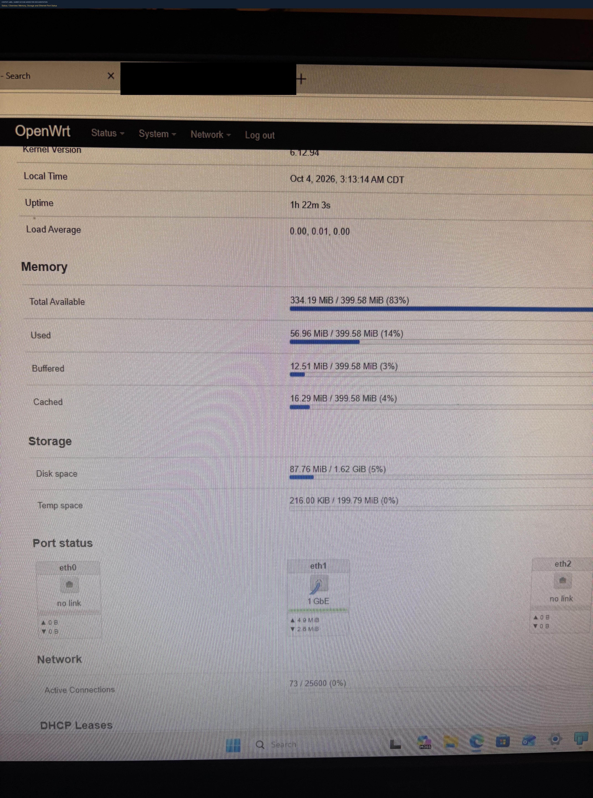
LuCI Status Overview reports 334.19 MiB available of 399.58 MiB memory (83%), disk usage of 87.76 MiB out of 1.62 GiB (5%), and eth1 linked at 1 GbE while eth0 and eth2 have no link. Uptime is 1h 22m 3s and local time now displays October 4, 2026, 3:13:14 AM CDT. The browser-tab email identifier is redacted. Storage capacity is visible; persistent configuration writes and reboot retention are not yet tested, and the time synchronization method is unknown.
Following the requested reboot test, authenticated LuCI Overview shows hostname USG-Revival with uptime 0h 1m 6s, compared with 1h 22m 3s in the prior resource photograph. The hostname is retained across the restart; OpenWrt 25.12.5 and kernel 6.12.94 remain running. Memory available is 337.59 MiB of 399.58 MiB and disk usage is 87.76 MiB of 1.62 GiB. The user reports changing the administrator password; explicit fresh login using that password is not separately documented. Personal browser-tab email details are redacted.
44 · WAN preparation: upstream Wi-Fi IPv4 subnet overlap check
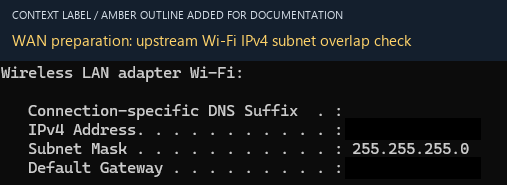
The laptop Wi-Fi adapter lists an upstream private IPv4 address, a 255.255.255.0 subnet mask and a default gateway. The observed upstream /24 does not overlap with the USG default 192.168.1.0/24 LAN, so no USG LAN renumbering is required for the planned downstream router test. Home IPv4 and gateway values are redacted; WAN connectivity is not yet tested.
45 · Network / Interfaces: WAN DHCP lease and link status
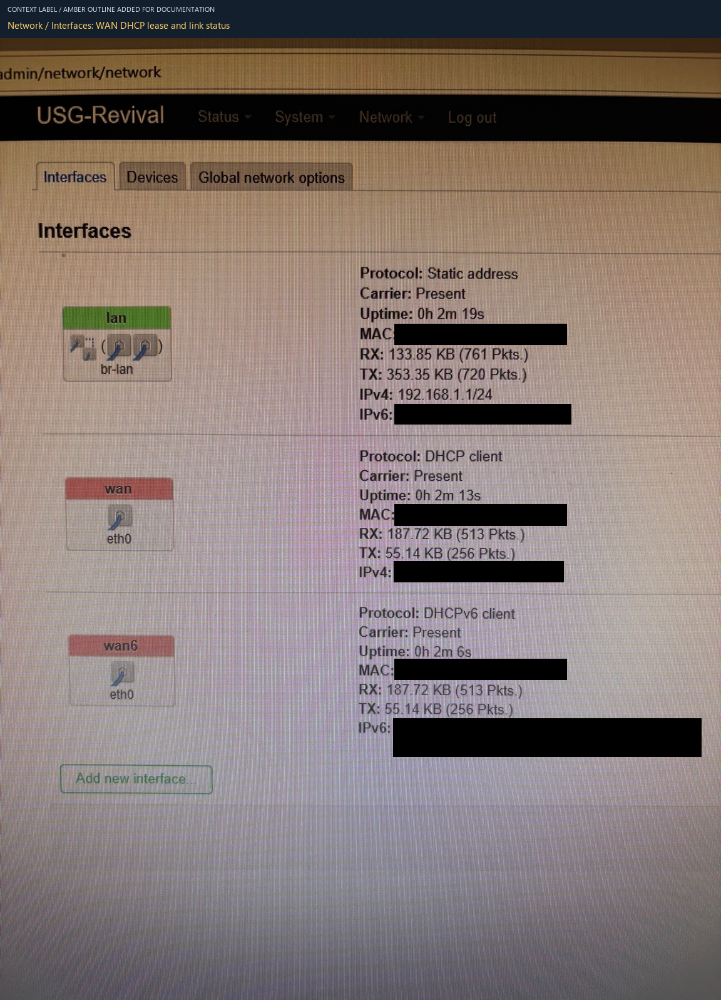
LuCI Network > Interfaces shows LAN br-lan at the default 192.168.1.1/24 with carrier present and WAN eth0 as a DHCP client with carrier present and an upstream private IPv4 /24 lease. WAN uptime is 0h 2m 13s with receive and transmit traffic. WAN6 shows a DHCPv6 client and a ULA IPv6 address, which does not establish public IPv6 Internet connectivity. MAC addresses, unique IPv6 identifiers and the home WAN IPv4 value are redacted. Client Internet routing and DNS tests remain pending.
46 · PC-001 PowerShell: IPv4 Internet reachability and DNS resolution
PC-001 PowerShell shows ping -n 4 1.1.1.1 with four replies, zero lost packets and round-trip minimum/maximum/average of 13/22/15 ms. nslookup example.com identifies USG-Revival.lan as the responding DNS server and returns A and AAAA records. Account paths and the unique local IPv6 DNS-server address are redacted; public test targets and observed DNS answers are retained. This documents IPv4 reachability and DNS resolution in the reported Ethernet-only test topology; HTTPS browsing and public IPv6 reachability are not yet tested.
47 · Network / Firewall / General Settings: zone-policy review
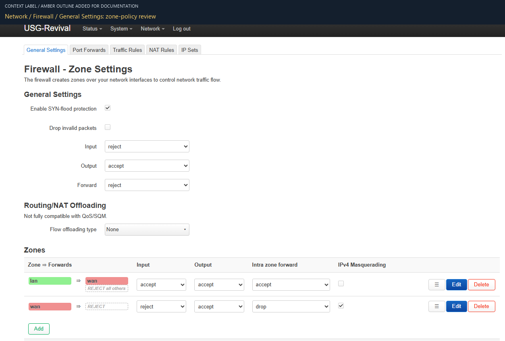
LuCI Firewall > General Settings shows global input/forward reject and output accept; SYN-flood protection enabled; drop-invalid unchecked; flow offloading None. LAN input/output/intra-zone forwarding are accept and LAN forwards to WAN. WAN input is reject, output accept, intra-zone forwarding drop, with IPv4 masquerading enabled. No sensitive details were identified. This is a zone-configuration review, not a traffic-rule/port-forward audit or an inbound enforcement test.
![Following the requested reboot test, authenticated LuCI Overview shows hostname USG-Revival with uptime 0h 1m 6s, compared with 1h 22m 3s in the prior resource photograph. The hostname is retained across the restart; OpenWrt 25.12.5 and kernel 6.12.94 remain running. Memory available is 337.59 MiB of 399.58 MiB and disk usage is 87.76 MiB of 1.62 GiB. The user reports changing the administrator password; explicit fresh login using that password is not separately documented. Personal browser-tab email details are redacted.](assets/08-reboot-validation/43-openwrt-hostname-after-reboot.webp)
![PC-001 PowerShell shows ping -n 4 1.1.1.1 with four replies, zero lost packets and round-trip minimum/maximum/average of 13/22/15 ms. nslookup example.com identifies USG-Revival.lan as the responding DNS server and returns A and AAAA records. Account paths and the unique local IPv6 DNS-server address are redacted; public test targets and observed DNS answers are retained. This documents IPv4 reachability and DNS resolution in the reported Ethernet-only test topology; HTTPS browsing and public IPv6 reachability are not yet tested.](assets/09-wan-validation/46-pc001-internet-ping-and-dns.png)